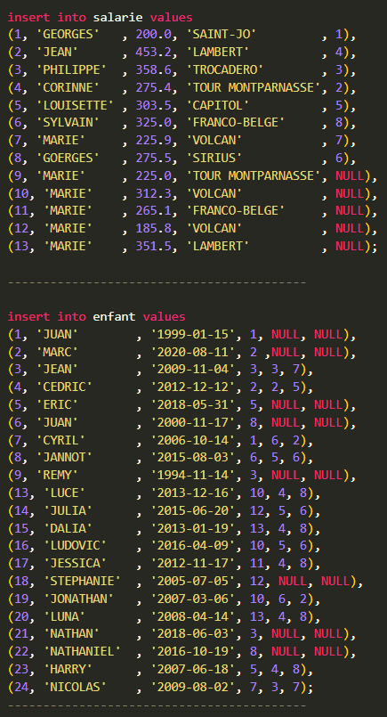

Preuves
S1.04 Création d'une base de données
Projet scolaire en groupe, concevoir et créer une base de donnée pour une agence d'interimaire.
Ce projet est découper en deux phase.
La première est la conception de la base de données.
La seconde est la création de la base avec le language SQL, ainsi que des requêtes que nous avons créer.
Pour chaque phase nous avons du rendre un pdf avec notre travail et nos explication personnel.

Ce projet correspond au 4 Composantes essentielles.
Il correspond aussi aux Apprentissages critiques Analyser un problème avec méthode et Comparer des algorithmes pour des problèmes classiques.
S2.04 Exploitation d'une base de données
Nous avions un modèle entité/association qui nous été fournie.
A partir de ce modèle nous avons du créer le modèle relationnel, puis créer la base, faire les insertions.
Avec cette base nous avon du générer des vue mais aussi gérer l'administration des droit d'accès ainsi que faire des graphique avec ses données.

La visualisation graphique des données sont a la fin du pdf.